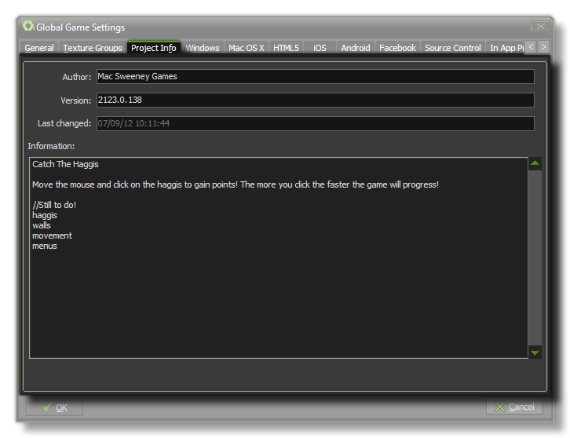

This section deals with the project info tab of
the Global Games Settings Window.
 This tab is
simply where you can keep track of your project. You can enter
details like the author name and the current version number, and
there is a large area at the bottom for keeping notes or leaving
messages for other team members etc...